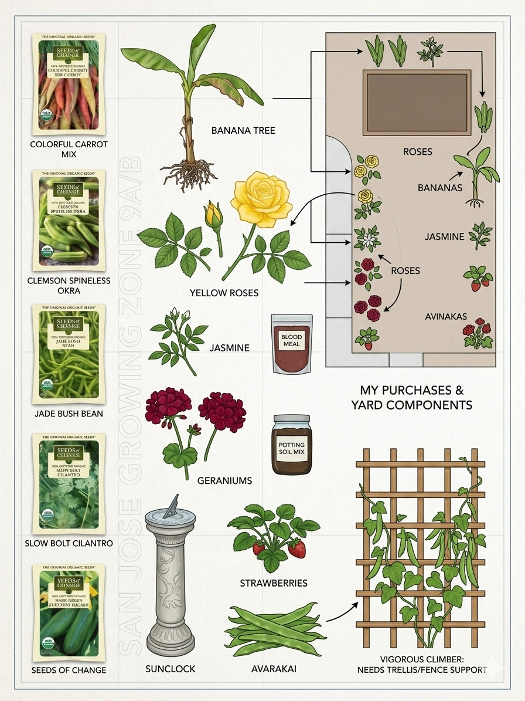
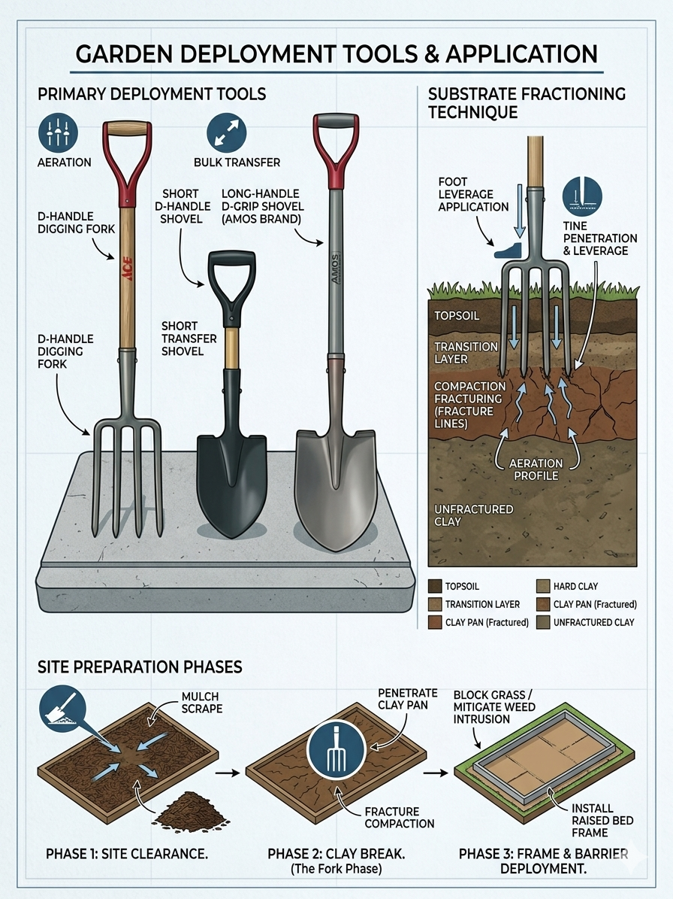

Deployment Blueprints, Components, & Tooling Application
Operational strategy adjusted to leverage specific technical experience while mitigating heavy load stress or airborne irritants.
Jai drives site layout precision and tech oversight. Giri and Mukundan leverage raw power under Jai's direction to handle mulch scraping, frame assembly, tool leverage work, and soil logistics.
Youth team execution. Handles seed sorting, depth verification matrixes, planting out live starter containers, and tracking spacing requirements safely inside the bed boundaries.
Zero lifting / Zero dust zone. Archena directs live blueprint checks from a comfortable seating layout to prevent back strain. Janu acts as Hydration Engineer, managing low-effort water soaking tasks without inhaling dry soil dust.
Comprehensive architectural schematics isolating component parameters, spatial layouts, tool actions, and deep substrate preparation pipelines.

